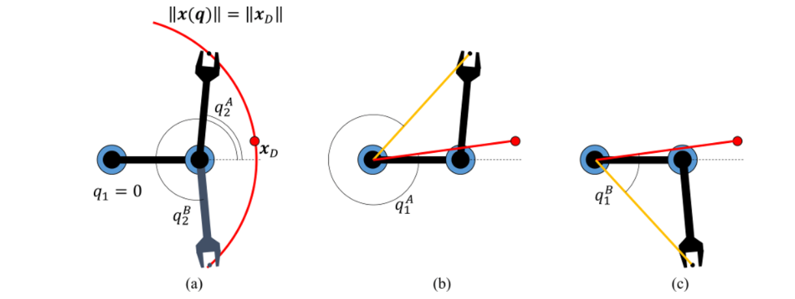

2. Analytical IK in 2D
Let us begin by deriving analytical solutions for most common planar robots.2.1 2R manipulator
Figure 2 The key steps for solving the planar 2R IK problem. (a) Determine a value for q2 that puts the end effector point on the circle centered on the origin with radius equal to the distance between the origin and the target point. Here there are 2 solutions. Then, determine the values of q1 that the end effector is rotated onto the target, with q2 fixed to its first (b) and second (c) solutions.
Consider a 2R manipulator with the first joint located at the origin, and at the reference configuration the second joint is located L1 distance away along the x axis. The end effector is located L2 distance away from the second joint along the x axis.
With this definition, the forward kinematics equations in the previous chapter show that the world coordinates of the end effector at configuration q=(q1,q2) are given by:

where ci=cosqi and si=sinqi , for i=1,2 .
Suppose we wish to move this x to the target point xD . Thinking geometrically, we observe that the only joint controlling the norm ∥x(q)∥ (i.e., the distance from the end effector to the origin) is q2 . See Fig. 2(a) for an illustration. As a result, ∥x(q1,q2)∥=∥x(0,q2)∥ which results in the simplified calculation:
∥x(q1,q2)∥=(L1+c2L2)2+(s2L2)2
Since this norm must match the norm of xD , we require:
∥xD∥2=(L1+c2L2)2+(s2L2)2=L21+2c2L1L2+c22L22+s22L22=L21+2c2L1L2+L22
2.2 RP manipulator
As a second example, consider a manipulator with one revolute and one prismatic joint extending along the x axis. If the reference position has both the revolute and prismatic joint at the origin, the configuration (q1,q2) simply gives the polar coordinates of the second link. Suppose the end effector were specified with a distance L2 from the origin on the x axis.
Then, if the polar coordinates of the target point xD are (θ,d)≡(atan2(xy,xx>),∥xD>∥) , then the two solutions are q(1)=(θ,d−L2) and q(2)=(θ+π,−d+L2) .
 Previous
Previous